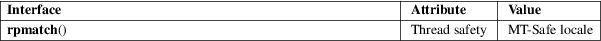

rpmatch − determine if the answer to a question is affirmative or negative
Standard C library (libc, −lc)
#include <stdlib.h>
int rpmatch(const char *response);
Feature Test Macro Requirements for glibc (see feature_test_macros(7)):
rpmatch():
Since glibc 2.19:
_DEFAULT_SOURCE
glibc 2.19 and earlier:
_SVID_SOURCE
rpmatch() handles a user response to yes or no questions, with support for internationalization.
response should be a null-terminated string containing a user-supplied response, perhaps obtained with fgets(3) or getline(3).
The user’s language preference is taken into account per the environment variables LANG, LC_MESSAGES, and LC_ALL, if the program has called setlocale(3) to effect their changes.
Regardless of the locale, responses matching ^[Yy] are always accepted as affirmative, and those matching ^[Nn] are always accepted as negative.
After examining response, rpmatch() returns 0 for a recognized negative response ("no"), 1 for a recognized positive response ("yes"), and −1 when the value of response is unrecognized.
A return value of −1 may indicate either an invalid input, or some other error. It is incorrect to only test if the return value is nonzero.
rpmatch() can fail for any of the reasons that regcomp(3) or regexec(3) can fail; the cause of the error is not available from errno or anywhere else, but indicates a failure of the regex engine (but this case is indistinguishable from that of an unrecognized value of response).
For an explanation of the terms used in this section, see attributes(7).

None.
GNU, FreeBSD, AIX.
The YESEXPR and NOEXPR of some locales (including "C") only inspect the first character of the response. This can mean that "yno" et al. resolve to 1. This is an unfortunate historical side-effect which should be fixed in time with proper localisation, and should not deter from rpmatch() being the proper way to distinguish between binary answers.
The following program displays the results when rpmatch() is applied to the string given in the program’s command-line argument.
#define
_DEFAULT_SOURCE
#include <locale.h>
#include <stdio.h>
#include <stdlib.h>
#include <string.h>
int
main(int argc, char *argv[])
{
if (argc != 2 || strcmp(argv[1],
"−−help") == 0) {
fprintf(stderr, "%s response\n", argv[0]);
exit(EXIT_FAILURE);
}
setlocale(LC_ALL,
"");
printf("rpmatch() returns: %d\n",
rpmatch(argv[1]));
exit(EXIT_SUCCESS);
}
fgets(3), getline(3), nl_langinfo(3), regcomp(3), setlocale(3)